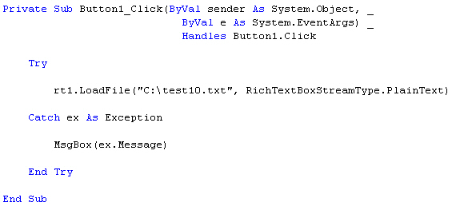
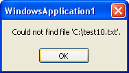
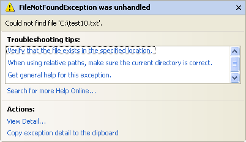
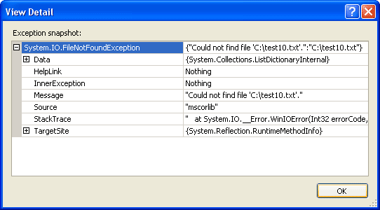

Try ... Catch in VB .NET
This lesson is part of an ongoing tutorial. The previous part is here: Runtime Errors
VB.NET has a inbuilt class that deals with errors. The Class is called Exception. When an exception error is found, an Exception object is created. The coding structure VB.NET uses to deal with such Exceptions is called the Try … Catch structure.
In the coding area for your button, type the word Try. Then hit the return key on your keyboard. VB.NET completes the rest of the structure for you:
Try
Catch ex As Exception
End Try
The Try word means "Try to execute this code". The Catch word means "Catch any errors here". The ex is a variable, and the type of variable it is is an Exception object.
Move your line of code from the previous section to the Try part:
Try
rt1.LoadFile("C:\test10.txt", RichTextBoxStreamType.PlainText)
Catch ex As Exception
End Try
When you run your programme, VB will Try to execute any code in the Try part. If everything goes well, then it skips the Catch part. However, if an error occurs, VB.NET jumps straight to Catch. Add the following to your Catch part:
MsgBox(ex.Message)
Your coding window should look like this:

Because ex is an object variable, it now has its own Properties and methods. One of these is the Message property. Run your programme and test it out. Click your button. You should see the following error message:

The message is coming from the "additional Information" section of the error message we saw earlier, the one we didn't handle. But the point about this new message box is that it will not crash your programme. You have handled the Exception, and displayed an appropriate message for the user.
If you know the kind of error that a programme might throw, you can get what Type it is from the Error message box you saw earlier. This one:

If you have version 2010 of Visual Studio Express, click the View Details links under Actions to see the following:

In version 2012, you can see the same information in the first line: "An unhandled exception of type 'System.IO.FileNotFoundException' occurred in mscorlib.dll".
The first line tells us the Type of Exception it is:
System.IO.FileNotFoundException
You can add this directly to the catch part. Previously, you were just catching any error that might be thrown:
Catch ex As Exception
But if you know a "file not found" error might be thrown, you can add that to the Catch line, instead of Exception:
Catch ex As System.IO.FileNotFoundException
You can keep the Exception line as well. (You can have as many Catch parts as you want.) This will Catch any other errors that may occur:
Try
rt1.LoadFile("C:\test10.txt", RichTextBoxStreamType.PlainText)
Catch ex As System.IO.FileNotFoundException
MsgBox(ex.Message)
Catch ex As Exception
MsgBox(ex.Message)
End Try
There is one last part of the Try … Catch Statement that VB.NET doesn't add for you - Finally:
Try
Catch ex As Exception
Finally
End Try
The Finally part is always executed, whether an error occurs or not. You typically add a Finally part to perform any cleanup operations that are needed. For example, you may have opened a file before going into a Try … Catch Statement. If an error occurs, the file will still be open. Whether an error occurs or not, you still need to close the file. You can do that in the Finally part.
But Microsoft advise that you always use Try … Catch Statements
in your code. However, throughout the rest of this course, for convenience sake,
we won't be using them much. Even when we should be.But that's no excuse for
you not to use them!
In the next part, we'll take a look at Logic Errors.